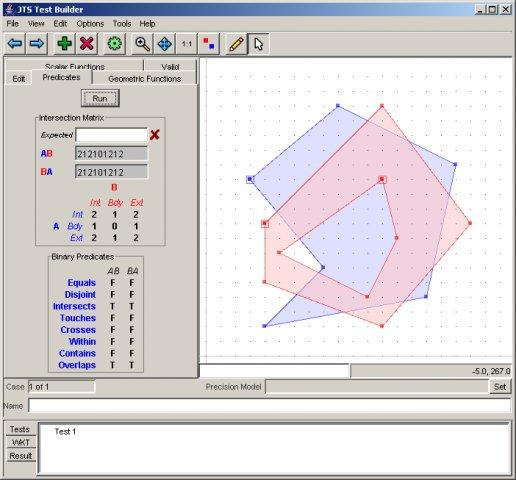

JTS¶
JTS is an open source library of spatial predicates and functions for processing geometries. It provides a complete, consistent, and robust implementation of fundamental algorithms for processing linear geometry on the 2-dimensional Cartesian plane.
JTS includes the “JTS Test Builder” which allows users to run tests and experiment with geometry through an interactive desktop interface. JTS stability is ensured through an extensive test suite.
JTS is used by most java based Open Source geospatial applications, and GEOS, which is a C++ port of JTS, is used by most C based applications. Additional ports are available for C# and JavaScript.
{kind=link}
Core Features¶
- Geometry model (point, line, area)
- Geometry operations (e.g., intersect, union, within, etc.)
- Precision handling
- Geometric constructions
- Metric functions (e.g., Cartesian 2D distance, Hausdorff distance)
- Spatial algorithms (e.g. buffer creation, line offsets, line simplification)
- Geometric math functions (e.g., angles, distances, etc.)
- Spatial structures (e.g. Quadtree and R-tree, Delauney triangulation)
- Input/Output (e.g., WKT, GML)
- High-precision arithmetic
Supported Formats¶
- Well Known Text (WKT) and Well Known Binary (WKB)
- GML 2
- Java Swing/AWT writing
Implemented Standards¶
- OGC Simple Features for SQL (SFSQL)
Details¶
Website: ttps://www.locationtech.org/projects/technology.jts
Licence: LGPL
Supported Platforms: Windows, Linux, Mac
API Interfaces: Java